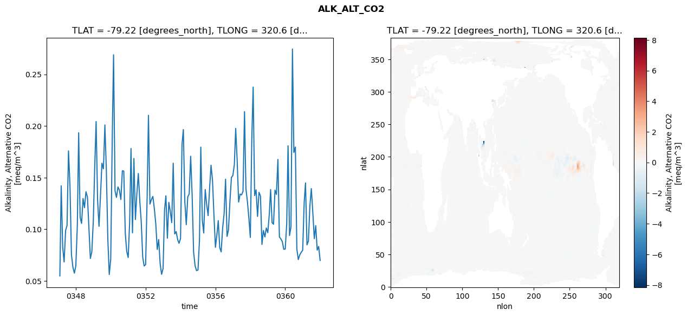
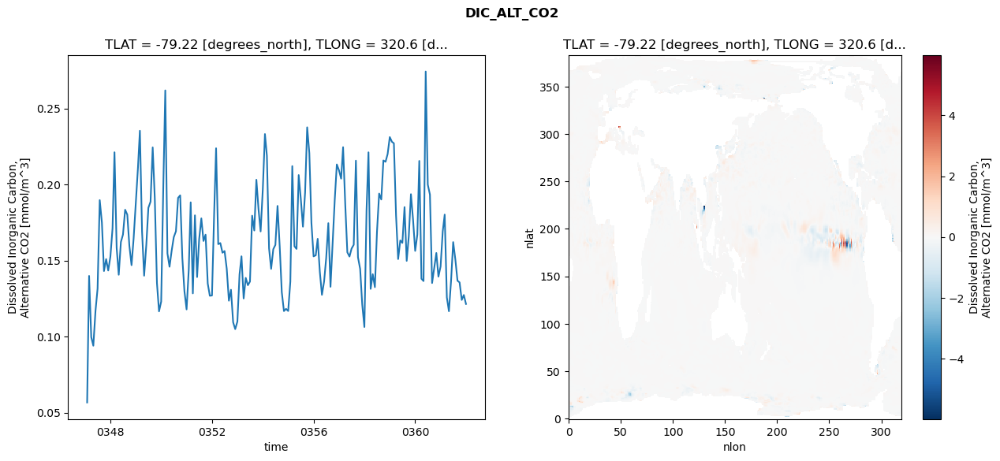
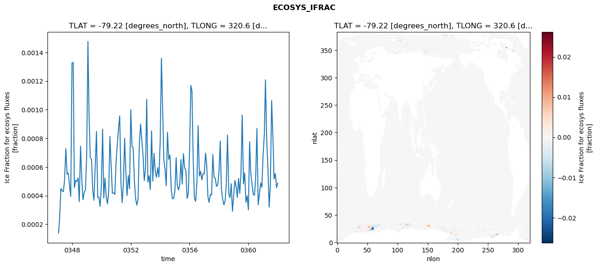
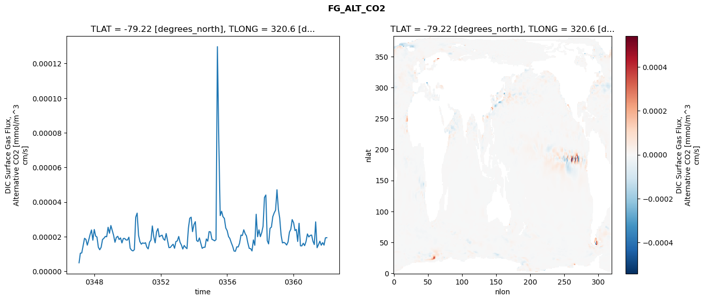

glb-dor_North_Atlantic_basin_034_1999-01-01_00136#
Simulation details#
Case: smyle.cdr-atlas-v0.glb-dor_North_Atlantic_basin_034_1999-01-01_00136.001
Basin: North_Atlantic_basin
Polygon: 34.0
Start date: 1999-01
Show code cell source Hide code cell source
import xarray as xr
import matplotlib.pyplot as plt
Show code cell source Hide code cell source
zarr_store = "/path/to/zarr/store"
# Parameters
zarr_store = "/global/cfs/projectdirs/m4746/Projects/Ocean-CDR-Atlas-v0/data/validation/smyle.cdr-atlas-v0.glb-dor_North_Atlantic_basin_034_1999-01-01_00136.001.validation.zarr"
Show code cell source Hide code cell source
%%time
ds_o = xr.open_zarr(zarr_store).compute()
ds_o
CPU times: user 616 ms, sys: 447 ms, total: 1.06 s
Wall time: 1.41 s
<xarray.Dataset> Size: 2MB
Dimensions: (nlat: 384, nlon: 320, time: 180)
Coordinates:
TLAT float64 8B -79.22
TLONG float64 8B 320.6
ULAT float64 8B -78.95
ULONG float64 8B 321.1
* time (time) object 1kB 0347-02-01 00:00:00 ... 0362-01-01 0...
z_t float32 4B 500.0
Dimensions without coordinates: nlat, nlon
Data variables:
ALK_ALT_CO2_diff (nlat, nlon) float32 492kB nan nan nan ... nan nan nan
ALK_ALT_CO2_rmse (time) float64 1kB 0.05476 0.142 ... 0.08328 0.06975
DIC_ALT_CO2_diff (nlat, nlon) float32 492kB nan nan nan ... nan nan nan
DIC_ALT_CO2_rmse (time) float64 1kB 0.05666 0.1399 ... 0.1273 0.1215
ECOSYS_IFRAC_diff (nlat, nlon) float32 492kB nan nan nan ... nan nan nan
ECOSYS_IFRAC_rmse (time) float64 1kB 0.0001386 0.0002464 ... 0.0004866
FG_ALT_CO2_diff (nlat, nlon) float32 492kB nan nan nan ... nan nan nan
FG_ALT_CO2_rmse (time) float64 1kB 4.92e-06 1.044e-05 ... 1.942e-05xarray.Dataset
- nlat: 384
- nlon: 320
- time: 180
- TLAT()float64-79.22
- long_name :
- array of t-grid latitudes
- units :
- degrees_north
array(-79.22052261)
- TLONG()float64320.6
- long_name :
- array of t-grid longitudes
- units :
- degrees_east
array(320.56250892)
- ULAT()float64-78.95
- long_name :
- array of u-grid latitudes
- units :
- degrees_north
array(-78.95289509)
- ULONG()float64321.1
- long_name :
- array of u-grid longitudes
- units :
- degrees_east
array(321.12500894)
- time(time)object0347-02-01 00:00:00 ... 0362-01-...
- bounds :
- time_bound
- long_name :
- time
array([cftime.DatetimeNoLeap(347, 2, 1, 0, 0, 0, 0, has_year_zero=True), cftime.DatetimeNoLeap(347, 3, 1, 0, 0, 0, 0, has_year_zero=True), cftime.DatetimeNoLeap(347, 4, 1, 0, 0, 0, 0, has_year_zero=True), cftime.DatetimeNoLeap(347, 5, 1, 0, 0, 0, 0, has_year_zero=True), cftime.DatetimeNoLeap(347, 6, 1, 0, 0, 0, 0, has_year_zero=True), cftime.DatetimeNoLeap(347, 7, 1, 0, 0, 0, 0, has_year_zero=True), cftime.DatetimeNoLeap(347, 8, 1, 0, 0, 0, 0, has_year_zero=True), cftime.DatetimeNoLeap(347, 9, 1, 0, 0, 0, 0, has_year_zero=True), cftime.DatetimeNoLeap(347, 10, 1, 0, 0, 0, 0, has_year_zero=True), cftime.DatetimeNoLeap(347, 11, 1, 0, 0, 0, 0, has_year_zero=True), cftime.DatetimeNoLeap(347, 12, 1, 0, 0, 0, 0, has_year_zero=True), cftime.DatetimeNoLeap(348, 1, 1, 0, 0, 0, 0, has_year_zero=True), cftime.DatetimeNoLeap(348, 2, 1, 0, 0, 0, 0, has_year_zero=True), cftime.DatetimeNoLeap(348, 3, 1, 0, 0, 0, 0, has_year_zero=True), cftime.DatetimeNoLeap(348, 4, 1, 0, 0, 0, 0, has_year_zero=True), cftime.DatetimeNoLeap(348, 5, 1, 0, 0, 0, 0, has_year_zero=True), cftime.DatetimeNoLeap(348, 6, 1, 0, 0, 0, 0, has_year_zero=True), cftime.DatetimeNoLeap(348, 7, 1, 0, 0, 0, 0, has_year_zero=True), cftime.DatetimeNoLeap(348, 8, 1, 0, 0, 0, 0, has_year_zero=True), cftime.DatetimeNoLeap(348, 9, 1, 0, 0, 0, 0, has_year_zero=True), cftime.DatetimeNoLeap(348, 10, 1, 0, 0, 0, 0, has_year_zero=True), cftime.DatetimeNoLeap(348, 11, 1, 0, 0, 0, 0, has_year_zero=True), cftime.DatetimeNoLeap(348, 12, 1, 0, 0, 0, 0, has_year_zero=True), cftime.DatetimeNoLeap(349, 1, 1, 0, 0, 0, 0, has_year_zero=True), cftime.DatetimeNoLeap(349, 2, 1, 0, 0, 0, 0, has_year_zero=True), cftime.DatetimeNoLeap(349, 3, 1, 0, 0, 0, 0, has_year_zero=True), cftime.DatetimeNoLeap(349, 4, 1, 0, 0, 0, 0, has_year_zero=True), cftime.DatetimeNoLeap(349, 5, 1, 0, 0, 0, 0, has_year_zero=True), cftime.DatetimeNoLeap(349, 6, 1, 0, 0, 0, 0, has_year_zero=True), cftime.DatetimeNoLeap(349, 7, 1, 0, 0, 0, 0, has_year_zero=True), cftime.DatetimeNoLeap(349, 8, 1, 0, 0, 0, 0, has_year_zero=True), cftime.DatetimeNoLeap(349, 9, 1, 0, 0, 0, 0, has_year_zero=True), cftime.DatetimeNoLeap(349, 10, 1, 0, 0, 0, 0, has_year_zero=True), cftime.DatetimeNoLeap(349, 11, 1, 0, 0, 0, 0, has_year_zero=True), cftime.DatetimeNoLeap(349, 12, 1, 0, 0, 0, 0, has_year_zero=True), cftime.DatetimeNoLeap(350, 1, 1, 0, 0, 0, 0, has_year_zero=True), cftime.DatetimeNoLeap(350, 2, 1, 0, 0, 0, 0, has_year_zero=True), cftime.DatetimeNoLeap(350, 3, 1, 0, 0, 0, 0, has_year_zero=True), cftime.DatetimeNoLeap(350, 4, 1, 0, 0, 0, 0, has_year_zero=True), cftime.DatetimeNoLeap(350, 5, 1, 0, 0, 0, 0, has_year_zero=True), cftime.DatetimeNoLeap(350, 6, 1, 0, 0, 0, 0, has_year_zero=True), cftime.DatetimeNoLeap(350, 7, 1, 0, 0, 0, 0, has_year_zero=True), cftime.DatetimeNoLeap(350, 8, 1, 0, 0, 0, 0, has_year_zero=True), cftime.DatetimeNoLeap(350, 9, 1, 0, 0, 0, 0, has_year_zero=True), cftime.DatetimeNoLeap(350, 10, 1, 0, 0, 0, 0, has_year_zero=True), cftime.DatetimeNoLeap(350, 11, 1, 0, 0, 0, 0, has_year_zero=True), cftime.DatetimeNoLeap(350, 12, 1, 0, 0, 0, 0, has_year_zero=True), cftime.DatetimeNoLeap(351, 1, 1, 0, 0, 0, 0, has_year_zero=True), cftime.DatetimeNoLeap(351, 2, 1, 0, 0, 0, 0, has_year_zero=True), cftime.DatetimeNoLeap(351, 3, 1, 0, 0, 0, 0, has_year_zero=True), cftime.DatetimeNoLeap(351, 4, 1, 0, 0, 0, 0, has_year_zero=True), cftime.DatetimeNoLeap(351, 5, 1, 0, 0, 0, 0, has_year_zero=True), cftime.DatetimeNoLeap(351, 6, 1, 0, 0, 0, 0, has_year_zero=True), cftime.DatetimeNoLeap(351, 7, 1, 0, 0, 0, 0, has_year_zero=True), cftime.DatetimeNoLeap(351, 8, 1, 0, 0, 0, 0, has_year_zero=True), cftime.DatetimeNoLeap(351, 9, 1, 0, 0, 0, 0, has_year_zero=True), cftime.DatetimeNoLeap(351, 10, 1, 0, 0, 0, 0, has_year_zero=True), cftime.DatetimeNoLeap(351, 11, 1, 0, 0, 0, 0, has_year_zero=True), cftime.DatetimeNoLeap(351, 12, 1, 0, 0, 0, 0, has_year_zero=True), cftime.DatetimeNoLeap(352, 1, 1, 0, 0, 0, 0, has_year_zero=True), cftime.DatetimeNoLeap(352, 2, 1, 0, 0, 0, 0, has_year_zero=True), cftime.DatetimeNoLeap(352, 3, 1, 0, 0, 0, 0, has_year_zero=True), cftime.DatetimeNoLeap(352, 4, 1, 0, 0, 0, 0, has_year_zero=True), cftime.DatetimeNoLeap(352, 5, 1, 0, 0, 0, 0, has_year_zero=True), cftime.DatetimeNoLeap(352, 6, 1, 0, 0, 0, 0, has_year_zero=True), cftime.DatetimeNoLeap(352, 7, 1, 0, 0, 0, 0, has_year_zero=True), cftime.DatetimeNoLeap(352, 8, 1, 0, 0, 0, 0, has_year_zero=True), cftime.DatetimeNoLeap(352, 9, 1, 0, 0, 0, 0, has_year_zero=True), cftime.DatetimeNoLeap(352, 10, 1, 0, 0, 0, 0, has_year_zero=True), cftime.DatetimeNoLeap(352, 11, 1, 0, 0, 0, 0, has_year_zero=True), cftime.DatetimeNoLeap(352, 12, 1, 0, 0, 0, 0, has_year_zero=True), cftime.DatetimeNoLeap(353, 1, 1, 0, 0, 0, 0, has_year_zero=True), cftime.DatetimeNoLeap(353, 2, 1, 0, 0, 0, 0, has_year_zero=True), cftime.DatetimeNoLeap(353, 3, 1, 0, 0, 0, 0, has_year_zero=True), cftime.DatetimeNoLeap(353, 4, 1, 0, 0, 0, 0, has_year_zero=True), cftime.DatetimeNoLeap(353, 5, 1, 0, 0, 0, 0, has_year_zero=True), cftime.DatetimeNoLeap(353, 6, 1, 0, 0, 0, 0, has_year_zero=True), cftime.DatetimeNoLeap(353, 7, 1, 0, 0, 0, 0, has_year_zero=True), cftime.DatetimeNoLeap(353, 8, 1, 0, 0, 0, 0, has_year_zero=True), cftime.DatetimeNoLeap(353, 9, 1, 0, 0, 0, 0, has_year_zero=True), cftime.DatetimeNoLeap(353, 10, 1, 0, 0, 0, 0, has_year_zero=True), cftime.DatetimeNoLeap(353, 11, 1, 0, 0, 0, 0, has_year_zero=True), cftime.DatetimeNoLeap(353, 12, 1, 0, 0, 0, 0, has_year_zero=True), cftime.DatetimeNoLeap(354, 1, 1, 0, 0, 0, 0, has_year_zero=True), cftime.DatetimeNoLeap(354, 2, 1, 0, 0, 0, 0, has_year_zero=True), cftime.DatetimeNoLeap(354, 3, 1, 0, 0, 0, 0, has_year_zero=True), cftime.DatetimeNoLeap(354, 4, 1, 0, 0, 0, 0, has_year_zero=True), cftime.DatetimeNoLeap(354, 5, 1, 0, 0, 0, 0, has_year_zero=True), cftime.DatetimeNoLeap(354, 6, 1, 0, 0, 0, 0, has_year_zero=True), cftime.DatetimeNoLeap(354, 7, 1, 0, 0, 0, 0, has_year_zero=True), cftime.DatetimeNoLeap(354, 8, 1, 0, 0, 0, 0, has_year_zero=True), cftime.DatetimeNoLeap(354, 9, 1, 0, 0, 0, 0, has_year_zero=True), cftime.DatetimeNoLeap(354, 10, 1, 0, 0, 0, 0, has_year_zero=True), cftime.DatetimeNoLeap(354, 11, 1, 0, 0, 0, 0, has_year_zero=True), cftime.DatetimeNoLeap(354, 12, 1, 0, 0, 0, 0, has_year_zero=True), cftime.DatetimeNoLeap(355, 1, 1, 0, 0, 0, 0, has_year_zero=True), cftime.DatetimeNoLeap(355, 2, 1, 0, 0, 0, 0, has_year_zero=True), cftime.DatetimeNoLeap(355, 3, 1, 0, 0, 0, 0, has_year_zero=True), cftime.DatetimeNoLeap(355, 4, 1, 0, 0, 0, 0, has_year_zero=True), cftime.DatetimeNoLeap(355, 5, 1, 0, 0, 0, 0, has_year_zero=True), cftime.DatetimeNoLeap(355, 6, 1, 0, 0, 0, 0, has_year_zero=True), cftime.DatetimeNoLeap(355, 7, 1, 0, 0, 0, 0, has_year_zero=True), cftime.DatetimeNoLeap(355, 8, 1, 0, 0, 0, 0, has_year_zero=True), cftime.DatetimeNoLeap(355, 9, 1, 0, 0, 0, 0, has_year_zero=True), cftime.DatetimeNoLeap(355, 10, 1, 0, 0, 0, 0, has_year_zero=True), cftime.DatetimeNoLeap(355, 11, 1, 0, 0, 0, 0, has_year_zero=True), cftime.DatetimeNoLeap(355, 12, 1, 0, 0, 0, 0, has_year_zero=True), cftime.DatetimeNoLeap(356, 1, 1, 0, 0, 0, 0, has_year_zero=True), cftime.DatetimeNoLeap(356, 2, 1, 0, 0, 0, 0, has_year_zero=True), cftime.DatetimeNoLeap(356, 3, 1, 0, 0, 0, 0, has_year_zero=True), cftime.DatetimeNoLeap(356, 4, 1, 0, 0, 0, 0, has_year_zero=True), cftime.DatetimeNoLeap(356, 5, 1, 0, 0, 0, 0, has_year_zero=True), cftime.DatetimeNoLeap(356, 6, 1, 0, 0, 0, 0, has_year_zero=True), cftime.DatetimeNoLeap(356, 7, 1, 0, 0, 0, 0, has_year_zero=True), cftime.DatetimeNoLeap(356, 8, 1, 0, 0, 0, 0, has_year_zero=True), cftime.DatetimeNoLeap(356, 9, 1, 0, 0, 0, 0, has_year_zero=True), cftime.DatetimeNoLeap(356, 10, 1, 0, 0, 0, 0, has_year_zero=True), cftime.DatetimeNoLeap(356, 11, 1, 0, 0, 0, 0, has_year_zero=True), cftime.DatetimeNoLeap(356, 12, 1, 0, 0, 0, 0, has_year_zero=True), cftime.DatetimeNoLeap(357, 1, 1, 0, 0, 0, 0, has_year_zero=True), cftime.DatetimeNoLeap(357, 2, 1, 0, 0, 0, 0, has_year_zero=True), cftime.DatetimeNoLeap(357, 3, 1, 0, 0, 0, 0, has_year_zero=True), cftime.DatetimeNoLeap(357, 4, 1, 0, 0, 0, 0, has_year_zero=True), cftime.DatetimeNoLeap(357, 5, 1, 0, 0, 0, 0, has_year_zero=True), cftime.DatetimeNoLeap(357, 6, 1, 0, 0, 0, 0, has_year_zero=True), cftime.DatetimeNoLeap(357, 7, 1, 0, 0, 0, 0, has_year_zero=True), cftime.DatetimeNoLeap(357, 8, 1, 0, 0, 0, 0, has_year_zero=True), cftime.DatetimeNoLeap(357, 9, 1, 0, 0, 0, 0, has_year_zero=True), cftime.DatetimeNoLeap(357, 10, 1, 0, 0, 0, 0, has_year_zero=True), cftime.DatetimeNoLeap(357, 11, 1, 0, 0, 0, 0, has_year_zero=True), cftime.DatetimeNoLeap(357, 12, 1, 0, 0, 0, 0, has_year_zero=True), cftime.DatetimeNoLeap(358, 1, 1, 0, 0, 0, 0, has_year_zero=True), cftime.DatetimeNoLeap(358, 2, 1, 0, 0, 0, 0, has_year_zero=True), cftime.DatetimeNoLeap(358, 3, 1, 0, 0, 0, 0, has_year_zero=True), cftime.DatetimeNoLeap(358, 4, 1, 0, 0, 0, 0, has_year_zero=True), cftime.DatetimeNoLeap(358, 5, 1, 0, 0, 0, 0, has_year_zero=True), cftime.DatetimeNoLeap(358, 6, 1, 0, 0, 0, 0, has_year_zero=True), cftime.DatetimeNoLeap(358, 7, 1, 0, 0, 0, 0, has_year_zero=True), cftime.DatetimeNoLeap(358, 8, 1, 0, 0, 0, 0, has_year_zero=True), cftime.DatetimeNoLeap(358, 9, 1, 0, 0, 0, 0, has_year_zero=True), cftime.DatetimeNoLeap(358, 10, 1, 0, 0, 0, 0, has_year_zero=True), cftime.DatetimeNoLeap(358, 11, 1, 0, 0, 0, 0, has_year_zero=True), cftime.DatetimeNoLeap(358, 12, 1, 0, 0, 0, 0, has_year_zero=True), cftime.DatetimeNoLeap(359, 1, 1, 0, 0, 0, 0, has_year_zero=True), cftime.DatetimeNoLeap(359, 2, 1, 0, 0, 0, 0, has_year_zero=True), cftime.DatetimeNoLeap(359, 3, 1, 0, 0, 0, 0, has_year_zero=True), cftime.DatetimeNoLeap(359, 4, 1, 0, 0, 0, 0, has_year_zero=True), cftime.DatetimeNoLeap(359, 5, 1, 0, 0, 0, 0, has_year_zero=True), cftime.DatetimeNoLeap(359, 6, 1, 0, 0, 0, 0, has_year_zero=True), cftime.DatetimeNoLeap(359, 7, 1, 0, 0, 0, 0, has_year_zero=True), cftime.DatetimeNoLeap(359, 8, 1, 0, 0, 0, 0, has_year_zero=True), cftime.DatetimeNoLeap(359, 9, 1, 0, 0, 0, 0, has_year_zero=True), cftime.DatetimeNoLeap(359, 10, 1, 0, 0, 0, 0, has_year_zero=True), cftime.DatetimeNoLeap(359, 11, 1, 0, 0, 0, 0, has_year_zero=True), cftime.DatetimeNoLeap(359, 12, 1, 0, 0, 0, 0, has_year_zero=True), cftime.DatetimeNoLeap(360, 1, 1, 0, 0, 0, 0, has_year_zero=True), cftime.DatetimeNoLeap(360, 2, 1, 0, 0, 0, 0, has_year_zero=True), cftime.DatetimeNoLeap(360, 3, 1, 0, 0, 0, 0, has_year_zero=True), cftime.DatetimeNoLeap(360, 4, 1, 0, 0, 0, 0, has_year_zero=True), cftime.DatetimeNoLeap(360, 5, 1, 0, 0, 0, 0, has_year_zero=True), cftime.DatetimeNoLeap(360, 6, 1, 0, 0, 0, 0, has_year_zero=True), cftime.DatetimeNoLeap(360, 7, 1, 0, 0, 0, 0, has_year_zero=True), cftime.DatetimeNoLeap(360, 8, 1, 0, 0, 0, 0, has_year_zero=True), cftime.DatetimeNoLeap(360, 9, 1, 0, 0, 0, 0, has_year_zero=True), cftime.DatetimeNoLeap(360, 10, 1, 0, 0, 0, 0, has_year_zero=True), cftime.DatetimeNoLeap(360, 11, 1, 0, 0, 0, 0, has_year_zero=True), cftime.DatetimeNoLeap(360, 12, 1, 0, 0, 0, 0, has_year_zero=True), cftime.DatetimeNoLeap(361, 1, 1, 0, 0, 0, 0, has_year_zero=True), cftime.DatetimeNoLeap(361, 2, 1, 0, 0, 0, 0, has_year_zero=True), cftime.DatetimeNoLeap(361, 3, 1, 0, 0, 0, 0, has_year_zero=True), cftime.DatetimeNoLeap(361, 4, 1, 0, 0, 0, 0, has_year_zero=True), cftime.DatetimeNoLeap(361, 5, 1, 0, 0, 0, 0, has_year_zero=True), cftime.DatetimeNoLeap(361, 6, 1, 0, 0, 0, 0, has_year_zero=True), cftime.DatetimeNoLeap(361, 7, 1, 0, 0, 0, 0, has_year_zero=True), cftime.DatetimeNoLeap(361, 8, 1, 0, 0, 0, 0, has_year_zero=True), cftime.DatetimeNoLeap(361, 9, 1, 0, 0, 0, 0, has_year_zero=True), cftime.DatetimeNoLeap(361, 10, 1, 0, 0, 0, 0, has_year_zero=True), cftime.DatetimeNoLeap(361, 11, 1, 0, 0, 0, 0, has_year_zero=True), cftime.DatetimeNoLeap(361, 12, 1, 0, 0, 0, 0, has_year_zero=True), cftime.DatetimeNoLeap(362, 1, 1, 0, 0, 0, 0, has_year_zero=True)], dtype=object) - z_t()float32500.0
- long_name :
- depth from surface to midpoint of layer
- positive :
- down
- units :
- centimeters
- valid_max :
- 537500.0
- valid_min :
- 500.0
array(500., dtype=float32)
- ALK_ALT_CO2_diff(nlat, nlon)float32nan nan nan nan ... nan nan nan nan
- cell_methods :
- time: mean
- grid_loc :
- 3111
- long_name :
- Alkalinity, Alternative CO2
- units :
- meq/m^3
array([[ nan, nan, nan, ..., nan, nan, nan], [ nan, nan, nan, ..., nan, nan, nan], [-0.00219727, -0.00048828, 0.00976562, ..., nan, nan, nan], ..., [ nan, nan, nan, ..., nan, nan, nan], [ nan, nan, nan, ..., nan, nan, nan], [ nan, nan, nan, ..., nan, nan, nan]], dtype=float32) - ALK_ALT_CO2_rmse(time)float640.05476 0.142 ... 0.08328 0.06975
- cell_methods :
- time: mean
- grid_loc :
- 3111
- long_name :
- Alkalinity, Alternative CO2
- units :
- meq/m^3
array([0.05476485, 0.14203324, 0.08256954, 0.0682472 , 0.09878218, 0.10358649, 0.1758293 , 0.1412526 , 0.07539979, 0.06316712, 0.05741448, 0.06453978, 0.10329332, 0.19347284, 0.11152058, 0.1056561 , 0.12973299, 0.12085258, 0.13632545, 0.1311605 , 0.10193215, 0.0716365 , 0.07785135, 0.1073838 , 0.1609442 , 0.20431463, 0.12845126, 0.10277415, 0.13303699, 0.1639307 , 0.15851067, 0.20099341, 0.15754196, 0.09058953, 0.05610483, 0.07092292, 0.18598838, 0.26898574, 0.1369375 , 0.13079614, 0.14096315, 0.13784164, 0.12877666, 0.15657371, 0.15637723, 0.09630213, 0.07862739, 0.07255373, 0.10727747, 0.17815339, 0.09644538, 0.16855922, 0.10936227, 0.13373971, 0.15394023, 0.12731298, 0.10732961, 0.07283949, 0.06433903, 0.06572826, 0.1301747 , 0.21032549, 0.12435462, 0.12860834, 0.13176691, 0.12038578, 0.10524346, 0.08035627, 0.09002516, 0.06655938, 0.05627232, 0.06192415, 0.11888545, 0.13233159, 0.09128922, 0.12602857, 0.11707112, 0.10635447, 0.16394022, 0.09541401, 0.09769509, 0.09000718, 0.08635123, 0.09093952, 0.18220458, 0.1965072 , 0.12640197, 0.10436883, 0.13133621, 0.13409136, 0.17067061, 0.13246038, 0.07806185, 0.06457894, 0.05988485, 0.06045874, 0.08922489, 0.17952488, 0.10918234, 0.09628635, 0.13844373, 0.12441153, 0.1131554 , 0.13965525, 0.16195002, 0.14718711, 0.11353876, 0.08243662, 0.09470933, 0.10832208, 0.08222478, 0.07802592, 0.1012816 , 0.11466712, 0.14845548, 0.09301694, 0.0992767 , 0.12742547, 0.15003761, 0.15217025, 0.16271086, 0.19761394, 0.16643474, 0.12633736, 0.13401742, 0.13321654, 0.13662642, 0.21397646, 0.13934628, 0.12665432, 0.11111032, 0.09201907, 0.18875834, 0.23768242, 0.13259512, 0.13816729, 0.11238354, 0.13573099, 0.13215494, 0.0852253 , 0.09869183, 0.09252122, 0.10122311, 0.09661534, 0.11404357, 0.13842145, 0.10633484, 0.10483117, 0.13787802, 0.13366281, 0.16761261, 0.09245899, 0.09060666, 0.08793499, 0.08055027, 0.08079102, 0.10512492, 0.18078774, 0.09385341, 0.10220197, 0.2745966 , 0.17437364, 0.17959554, 0.08090851, 0.07059081, 0.07506779, 0.07758026, 0.07960616, 0.12548849, 0.1448129 , 0.08483303, 0.08858739, 0.12295964, 0.13933066, 0.11614046, 0.09085293, 0.10347409, 0.07972986, 0.08327985, 0.06974666]) - DIC_ALT_CO2_diff(nlat, nlon)float32nan nan nan nan ... nan nan nan nan
- cell_methods :
- time: mean
- grid_loc :
- 3111
- long_name :
- Dissolved Inorganic Carbon, Alternative CO2
- units :
- mmol/m^3
array([[ nan, nan, nan, ..., nan, nan, nan], [ nan, nan, nan, ..., nan, nan, nan], [-0.01879883, -0.01513672, -0.00268555, ..., nan, nan, nan], ..., [ nan, nan, nan, ..., nan, nan, nan], [ nan, nan, nan, ..., nan, nan, nan], [ nan, nan, nan, ..., nan, nan, nan]], dtype=float32) - DIC_ALT_CO2_rmse(time)float640.05666 0.1399 ... 0.1273 0.1215
- cell_methods :
- time: mean
- grid_loc :
- 3111
- long_name :
- Dissolved Inorganic Carbon, Alternative CO2
- units :
- mmol/m^3
array([0.05665771, 0.13990033, 0.09958419, 0.09399949, 0.11689561, 0.1315284 , 0.1897494 , 0.17501572, 0.14311147, 0.15095712, 0.14346019, 0.15251007, 0.17122255, 0.22121401, 0.15839431, 0.14066495, 0.16218794, 0.16710382, 0.18342398, 0.18018891, 0.15961056, 0.14696907, 0.16455831, 0.18774855, 0.21087601, 0.23538107, 0.16916418, 0.1400337 , 0.1601519 , 0.18469691, 0.18870204, 0.22443163, 0.19099883, 0.13525494, 0.11658783, 0.12301275, 0.20022826, 0.26190566, 0.15467809, 0.14593562, 0.15659545, 0.16538891, 0.16926667, 0.19124229, 0.19288886, 0.15171282, 0.12987472, 0.1178629 , 0.14381923, 0.18829183, 0.12840053, 0.17974053, 0.13914772, 0.16422629, 0.17774015, 0.16285873, 0.1670276 , 0.13489808, 0.12683327, 0.12702908, 0.18085512, 0.22384639, 0.16078896, 0.16150944, 0.1551385 , 0.15625978, 0.14463429, 0.12360929, 0.13078107, 0.10937806, 0.10489854, 0.1098938 , 0.14088888, 0.15279926, 0.12506114, 0.13861522, 0.13378488, 0.13620257, 0.17951172, 0.16977015, 0.20316567, 0.18363314, 0.16914769, 0.19662654, 0.23320119, 0.21893504, 0.15807111, 0.14452499, 0.1574818 , 0.16027926, 0.18593874, 0.15941621, 0.12922657, 0.11676727, 0.11824071, 0.11682866, 0.13618636, 0.21212042, 0.15940638, 0.15764835, 0.20622785, 0.19075347, 0.17228353, 0.19478834, 0.23763264, 0.22066782, 0.174772 , 0.15276518, 0.15345547, 0.16429533, 0.14246305, 0.12746352, 0.13619531, 0.15160486, 0.17458818, 0.13274342, 0.16053925, 0.18985874, 0.21322194, 0.20933223, 0.20389441, 0.22456426, 0.18687712, 0.15543307, 0.15264004, 0.15788504, 0.16037875, 0.21570397, 0.15213076, 0.14452773, 0.12111541, 0.10629258, 0.18304782, 0.22118356, 0.13137407, 0.14101725, 0.13249671, 0.16894073, 0.19406113, 0.19014973, 0.21583316, 0.21494865, 0.22006308, 0.23121799, 0.22809452, 0.22712508, 0.17966724, 0.15098151, 0.16321896, 0.16162001, 0.18514411, 0.14978675, 0.16590567, 0.19365693, 0.1771218 , 0.15634765, 0.16707605, 0.21554041, 0.13802479, 0.13650954, 0.27434663, 0.19996518, 0.1933549 , 0.1352117 , 0.14496631, 0.15497829, 0.1394368 , 0.1460919 , 0.16920457, 0.18022643, 0.12575872, 0.11666958, 0.13694686, 0.16213046, 0.15081072, 0.1367234 , 0.13563718, 0.1240974 , 0.12734816, 0.12145621]) - ECOSYS_IFRAC_diff(nlat, nlon)float32nan nan nan nan ... nan nan nan nan
- cell_methods :
- time: mean
- grid_loc :
- 2110
- long_name :
- Ice Fraction for ecosys fluxes
- units :
- fraction
array([[ nan, nan, nan, ..., nan, nan, nan], [ nan, nan, nan, ..., nan, nan, nan], [-1.18911266e-04, -9.36388969e-05, -3.61323357e-04, ..., nan, nan, nan], ..., [ nan, nan, nan, ..., nan, nan, nan], [ nan, nan, nan, ..., nan, nan, nan], [ nan, nan, nan, ..., nan, nan, nan]], dtype=float32) - ECOSYS_IFRAC_rmse(time)float640.0001386 0.0002464 ... 0.0004866
- cell_methods :
- time: mean
- grid_loc :
- 2110
- long_name :
- Ice Fraction for ecosys fluxes
- units :
- fraction
array([0.00013862, 0.00024643, 0.00044968, 0.00043443, 0.00042789, 0.00050974, 0.00072773, 0.00054908, 0.00055823, 0.00047111, 0.00039478, 0.00132514, 0.0013299 , 0.00045669, 0.00050626, 0.00049868, 0.00052433, 0.00035813, 0.00074591, 0.00051128, 0.00037232, 0.00042253, 0.00044178, 0.00067488, 0.00147665, 0.0009567 , 0.00066412, 0.00065554, 0.0004359 , 0.0003679 , 0.00060591, 0.00084854, 0.00038793, 0.00038871, 0.00032544, 0.00047308, 0.00086466, 0.0003844 , 0.00052286, 0.00039158, 0.00034279, 0.00042835, 0.00081414, 0.00060493, 0.00041718, 0.00041874, 0.00040947, 0.00063931, 0.00075902, 0.00086394, 0.00095727, 0.00049567, 0.00035159, 0.00047754, 0.000801 , 0.00055959, 0.00040061, 0.00054146, 0.00044928, 0.00099932, 0.00074232, 0.00073557, 0.00050316, 0.00037761, 0.00033343, 0.00038158, 0.00075912, 0.00090017, 0.00079014, 0.00068238, 0.00050437, 0.00058541, 0.00107227, 0.00049468, 0.00053972, 0.00044169, 0.00085231, 0.00050201, 0.00069617, 0.00057186, 0.0005272 , 0.00059545, 0.00053106, 0.00077787, 0.00135972, 0.00102003, 0.00065499, 0.00058424, 0.00046914, 0.00084293, 0.00065372, 0.00068479, 0.0004476 , 0.00037783, 0.00038228, 0.00042951, 0.00066572, 0.00046796, 0.00043946, 0.00047578, 0.00065151, 0.00048048, 0.00069364, 0.0005937 , 0.00057542, 0.0003803 , 0.00041546, 0.00071713, 0.00116826, 0.00112989, 0.00064358, 0.00038397, 0.00036084, 0.00048506, 0.00088736, 0.00053693, 0.00057057, 0.00051056, 0.00055313, 0.00055252, 0.00069814, 0.0006218 , 0.00039382, 0.00035241, 0.00040881, 0.00040484, 0.00068686, 0.0005292 , 0.00052001, 0.00046448, 0.00047633, 0.0005631 , 0.00078096, 0.00044748, 0.00038146, 0.00033612, 0.00035982, 0.00047682, 0.00082357, 0.00041413, 0.00038538, 0.00048338, 0.00029055, 0.00040607, 0.00050621, 0.00046624, 0.0003876 , 0.00051965, 0.00041546, 0.00055776, 0.00096247, 0.00048184, 0.0005592 , 0.00035343, 0.00039903, 0.00030124, 0.0007761 , 0.00055923, 0.0004811 , 0.00040939, 0.00040222, 0.00052961, 0.0008682 , 0.00033688, 0.00040672, 0.00048876, 0.00045772, 0.00068201, 0.00082963, 0.00120879, 0.00078554, 0.0005919 , 0.00032013, 0.00048001, 0.00106415, 0.00081743, 0.00051673, 0.00055432, 0.00045511, 0.0004866 ]) - FG_ALT_CO2_diff(nlat, nlon)float32nan nan nan nan ... nan nan nan nan
- cell_methods :
- time: mean
- grid_loc :
- 2110
- long_name :
- DIC Surface Gas Flux, Alternative CO2
- units :
- mmol/m^3 cm/s
array([[ nan, nan, nan, ..., nan, nan, nan], [ nan, nan, nan, ..., nan, nan, nan], [1.2227565e-07, 1.4778834e-07, 2.7203760e-07, ..., nan, nan, nan], ..., [ nan, nan, nan, ..., nan, nan, nan], [ nan, nan, nan, ..., nan, nan, nan], [ nan, nan, nan, ..., nan, nan, nan]], dtype=float32) - FG_ALT_CO2_rmse(time)float644.92e-06 1.044e-05 ... 1.942e-05
- cell_methods :
- time: mean
- grid_loc :
- 2110
- long_name :
- DIC Surface Gas Flux, Alternative CO2
- units :
- mmol/m^3 cm/s
array([4.91973727e-06, 1.04409626e-05, 1.06178732e-05, 1.48530856e-05, 1.90541883e-05, 1.84209189e-05, 1.50938022e-05, 1.80756497e-05, 2.12642501e-05, 2.38810145e-05, 1.79730558e-05, 2.41486570e-05, 2.03153978e-05, 1.98060978e-05, 1.38692171e-05, 1.24528889e-05, 1.38879506e-05, 1.83453430e-05, 1.90858750e-05, 2.01563635e-05, 1.99562938e-05, 2.54417807e-05, 2.19701450e-05, 2.64384356e-05, 2.34922244e-05, 2.08675952e-05, 1.67692302e-05, 1.95559931e-05, 2.02169590e-05, 1.83357118e-05, 1.92853513e-05, 1.63834618e-05, 1.89385372e-05, 1.89575961e-05, 1.80760974e-05, 1.80510210e-05, 1.97011313e-05, 1.32909549e-05, 1.21918239e-05, 1.17715985e-05, 1.25258037e-05, 3.12589489e-05, 3.36016783e-05, 2.07887220e-05, 1.70905488e-05, 1.56647457e-05, 1.64060485e-05, 1.61183616e-05, 1.65123278e-05, 1.39504333e-05, 1.29510393e-05, 1.68586643e-05, 1.80270361e-05, 2.61910013e-05, 1.99789244e-05, 1.64428044e-05, 2.28054111e-05, 2.46882853e-05, 1.98721831e-05, 2.05052711e-05, 2.08593173e-05, 1.87033527e-05, 1.79421433e-05, 2.18151386e-05, 1.77534872e-05, 1.36674809e-05, 1.37731420e-05, 1.48625180e-05, 1.56210852e-05, 1.32877229e-05, 1.71625950e-05, 1.75608768e-05, 2.01198412e-05, 1.68329501e-05, 1.51662341e-05, 1.28610796e-05, 1.49304341e-05, 1.38467128e-05, 1.30709728e-05, 2.47538934e-05, ... 1.29720409e-04, 7.59155244e-05, 3.21917501e-05, 3.46842738e-05, 3.15658214e-05, 3.05272229e-05, 2.50587417e-05, 2.34880630e-05, 2.00202017e-05, 1.89777171e-05, 1.65438346e-05, 1.45244924e-05, 1.17208363e-05, 1.15471782e-05, 1.41077910e-05, 1.40683013e-05, 1.62371387e-05, 2.09426892e-05, 2.06672373e-05, 2.39740181e-05, 2.17110328e-05, 2.04841981e-05, 1.63699339e-05, 1.32468925e-05, 1.30907291e-05, 1.17500946e-05, 1.81298296e-05, 1.50330499e-05, 3.29454135e-05, 1.99728366e-05, 2.39367260e-05, 1.99953794e-05, 2.24403003e-05, 2.60050708e-05, 4.26456313e-05, 4.40621661e-05, 1.77478629e-05, 1.58121907e-05, 2.47892447e-05, 2.55429729e-05, 3.15276592e-05, 3.37448686e-05, 3.53099436e-05, 4.70849795e-05, 3.56499163e-05, 3.09438146e-05, 2.10138070e-05, 1.63730084e-05, 1.67298881e-05, 1.62178802e-05, 1.51797532e-05, 1.69096430e-05, 2.25474217e-05, 2.42810223e-05, 2.98633467e-05, 2.80678647e-05, 2.35061534e-05, 2.41844831e-05, 1.72252649e-05, 2.77274907e-05, 1.47052576e-05, 1.46854668e-05, 1.61940871e-05, 1.48292154e-05, 1.71824089e-05, 2.15943073e-05, 1.98333535e-05, 2.07109775e-05, 2.09568712e-05, 1.74738667e-05, 1.54540139e-05, 2.85418253e-05, 1.36119796e-05, 1.53493058e-05, 1.73829115e-05, 1.50578338e-05, 1.65726201e-05, 1.51146453e-05, 1.93082908e-05, 1.94157487e-05])
- timePandasIndex
PandasIndex(CFTimeIndex([0347-02-01 00:00:00, 0347-03-01 00:00:00, 0347-04-01 00:00:00, 0347-05-01 00:00:00, 0347-06-01 00:00:00, 0347-07-01 00:00:00, 0347-08-01 00:00:00, 0347-09-01 00:00:00, 0347-10-01 00:00:00, 0347-11-01 00:00:00, ... 0361-04-01 00:00:00, 0361-05-01 00:00:00, 0361-06-01 00:00:00, 0361-07-01 00:00:00, 0361-08-01 00:00:00, 0361-09-01 00:00:00, 0361-10-01 00:00:00, 0361-11-01 00:00:00, 0361-12-01 00:00:00, 0362-01-01 00:00:00], dtype='object', length=180, calendar='noleap', freq='MS'))
Show code cell source Hide code cell source
variables = [v[:-5] for v in ds_o.variables if "_rmse" in v]
Show code cell source Hide code cell source
plt.rcParams.update({'figure.max_open_warning': 0})
for v in variables:
fig, axs = plt.subplots(1, 2, figsize=(15, 6))
ds_o[f"{v}_rmse"].plot(ax=axs[0])
ds_o[f"{v}_diff"].plot(ax=axs[1])
plt.suptitle(v, fontweight="bold")



